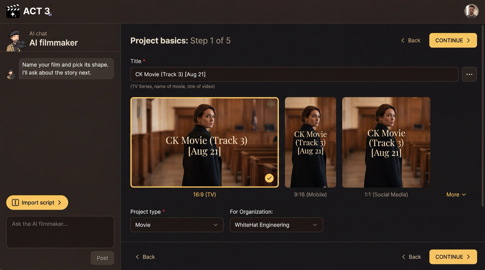

Step 1 of 8
Name your film
Give your film a title and pick its frame shape. Check the project type and the organization below. Then press CONTINUE at the top right.

What this page is
This is Project basics, the first page of the New Project wizard. You reach it from Home with Start Creating (or New project › in the project switcher). Everything here can be changed later.
- Title is the only required field: the name of the movie, series or video, up to 150 characters.
- Frame shape is your aspect ratio. 16:9 is a TV or cinema frame, 9:16 is a phone, 1:1 is a square social post. More opens other shapes.
- Project type (Movie, Documentary, Marketing Video and others) and For Organization (who owns the project).
Your decision
Pick the frame shape for where the film will be watched. Every shot is composed for it, so choose it now: 16:9 for a film or a YouTube video, 9:16 for TikTok, Reels and Shorts, 1:1 for a square feed post.
Already holding the screenplay file? The chat's Import script button jumps straight to the upload page and skips the next step.
Why you go next to the Script page
With the film named, ACT 3 AI asks how the story arrives. That choice sets which pages the wizard walks you through.